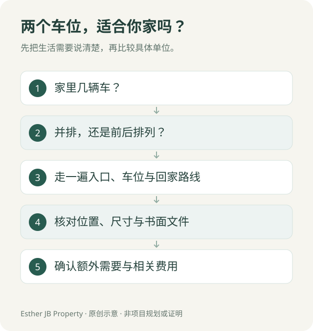

新山买家指南 · 资料核对：2026 年 10 月 18 日
新山买公寓，两个车位就够了吗？看房前核对这 5 件事
看公寓时，我们很容易先注意客厅、房间和泳池。可是住进去之后，每天都要经过的地方，还有停车场。
「有两个车位」是一个起点。车位怎样排列、在哪里、回家要绕几层，以及使用安排有没有写清楚，都会影响生活是否方便。

1．先确认：两个车位怎样停？
两个并排车位，与前后排列的串联车位，日常使用方式不同。
如果两个人上班时间不同，前后停车可能需要互相移车；如果出门时间接近，这种安排也可能适合。重点是把自己的生活时间表带进去比较。
请索取车位平面图，并确认它对应的是你正在考虑的单位。
2．从停车场入口走一次回家路线
看现房时，可以实际走一遍：入口、坡道、车位、电梯厅，再到单位。
留意转弯是否顺手、柱子会不会影响开门，以及买菜、推婴儿车或陪长辈回家时是否方便。还没开放的区域，先记录为待核实，不把示意图当作已经体验过。
3．拿自己的车来判断大小
不要只问「普通车能不能停」。把车型、车门开启空间及日常上下车需要一起考虑。
有柱子的车位、靠墙车位与转角车位，实际感受可能不同。能够现场查看时，先确认是否获准试停；不能试停时，索取尺寸及位置资料，保留待确认的问题。
4．把车位安排落实到文件
销售介绍写「附送车位」，还需要确认具体数量、编号、位置，以及使用或产权安排。
JKPTG 说明，附属地段（petak aksesori）供相关分层单位业主专用，停车位是其例子之一。具体购买的车位是否属于这种安排，应请律师依据相关交易及产权文件核对。JKPTG 官方说明：什么是附属地段？
5．预留家里变化的空间
现在一辆车，不代表以后永远一辆。可以先讨论未来是否可能增加车辆、家人来访频率，以及是否需要电动车充电。
额外车位租赁、访客停车和充电设施，都要向发展商或管理方核实当时条件。不要把尚未确定的供应当成购买前提。

选车位没有统一答案。把车型、出门时间和家人的需要讲清楚，才更容易筛选值得看的单位。
你可以先检查预填内容，再自行发送消息。
来源与更新
JKPTG 官方说明：什么是附属地段？：附属地段及专用停车位的定义。其余看房步骤是本文的实用检查建议，不是官方对任何项目的认定。
资料核对：2026 年 10 月 18 日。车位安排以具体单位的正式文件核对；涉及产权或交易条件，请由律师作个案审查。